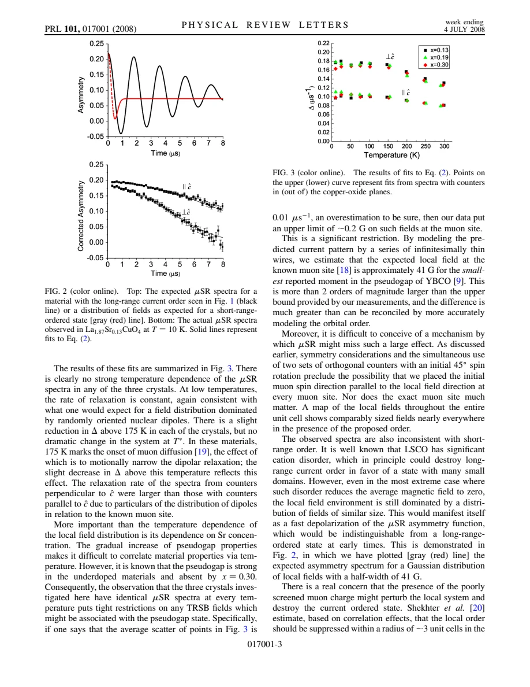

experiment · MacDougall · supplied source 2008
Absence of Broken Time-Reversal Symmetry in the Pseudogap State of the High Temperature La2-xSrxCuO4 Superconductor from Muon-Spin-Relaxation Measurements
Zero-field muons constrain a particular static current-order field in LSCO; they do not rule out every pseudogap mechanism.
The question: Would the proposed circulating-current order produce detectable local magnetic fields?
Before you start: the few terms you need
- LSCO: layered La2-xSrxCuO4; nominal x is Sr per formula unit
- Local probe: a distribution can matter even when the bulk average barely changes
See → explain → test
Understand it in four pictures.
Picture 1 / 4
Choose the comparison
Look for: Compare crystals inside and outside the pseudogap regime.
Swipe across the picture to read every label, or enlarge it below.
- x = 0.13
- x = 0.19
- x = 0.30
Teaching schematic. These are the actual three sampled compositions; panels are not measured spectra.
The test crosses both temperature and doping, rather than relying on an uncertain single onset.
Picture 2 / 4
Watch a local compass
Look for: A static field transverse to the initial muon spin causes precession.
Swipe across the picture to read every label, or enlarge it below.
- Initial muon spin
- Transverse local field
- Muon precession
Teaching schematic. Sensitivity depends on local field geometry and fluctuation rate; arrows show measurement logic.
Two detector orientations and a 45 degree initial polarization reduce geometric blind spots.
Check the original: PDF p. 2
Picture 3 / 4
Prediction versus observation
Look for: The proposed order predicts a much larger signal than the observed nuclear-field relaxation.
Swipe across the picture to read every label, or enlarge it below.
- Nuclear-like spectra
- 41 G current-pattern model
- No comparable static field
Teaching schematic. The 41 G estimate assumes the specified current pattern and moment; no experimental curve is reconstructed.
The reported approximately 0.2 G bound is a local-field bound, not a bound on every order parameter.
Check the original: PDF p. 3
Picture 4 / 4
Keep the time window
Look for: Rapidly changing fields can average out for a slow probe.
Swipe across the picture to read every label, or enlarge it below.
- Neutron window
- Muon window
- Motional narrowing
Teaching schematic. The source estimates greater than 400 MHz fluctuations could hide a 41 G Gaussian distribution.
A null static-field result leaves sufficiently fast fluctuations and some symmetry patterns open.
Check the original: PDF p. 4
Predict before revealing
Could zero mean magnetization conceal a broad distribution of static 41 G local fields?
Choose an answer, then compare the reasoning.
Muons sense local fields. Opposite domains cancel a bulk mean but do not remove the field distribution. Fast fluctuations are a different way to narrow the signal.
Read the answer
No; the distribution can still produce rapid depolarization Muons sense local fields. Opposite domains cancel a bulk mean but do not remove the field distribution. Fast fluctuations are a different way to narrow the signal.
Go deeper Follow the full argument
What was actually tested
MacDougall and colleagues test one concrete explanation of the pseudogap: an orbital-current pattern inferred from earlier photoemission and polarized-neutron work. Such a pattern breaks time reversal and should generate a magnetic field at an implanted muon. The samples are LSCO single crystals with x = 0.13, 0.19 and 0.30. The source adopts pseudogap temperatures of about 150 K, 75 K and zero from contemporary ARPES measurements. Comparing all three crystals matters: an order parameter that develops gradually in temperature should still distinguish a strong-pseudogap crystal from a crystal outside that regime. This is a material-specific and pattern-specific test, rather than a direct measurement of the pseudogap energy.
How the geometry avoids a false negative
Positive muons enter the crystal with a known spin polarization and decay by emitting positrons preferentially along their instantaneous spin. Detector asymmetries therefore track the ensemble polarization. The initial spin was rotated about 45 degrees relative to the beam and crystallographic c direction, and two orthogonal detector sets were used. This low-symmetry choice makes it unlikely that the local field is parallel to every muon spin at all symmetry-related stopping sites. A single spin in a static field has both a longitudinal component that remains and a transverse component that oscillates. Long-range order would give coherent precession; randomly oriented short-range static fields would instead cause rapid initial depolarization.
The observed spectra and the numerical bound
The measured spectra do not show the predicted oscillations or strong depolarization. They fit the Gaussian Kubo-Toyabe response expected from random nuclear dipole fields. Relaxation rates are nearly independent of temperature and doping. A slight narrowing above approximately 175 K is attributed to muon diffusion, not a pseudogap transition. Taking an intentionally generous scatter of 0.01 inverse microseconds gives an upper bound of about 0.2 G for additional local fields. A thin-wire calculation of the proposed current pattern gives about 41 G at the known muon site for the smallest moment cited from YBCO neutron work. The large discrepancy is the central quantitative argument.
What the null result does and does not exclude
Destroying long-range coherence alone would not necessarily hide this magnetic field. Small domains with zero average field can still produce a broad local distribution and rapid relaxation. The authors also consider whether the muon charge suppresses nearby order; their model leaves roughly 0.6 G after eliminating order over several nearby cells, still exceeding the quoted bound. These calculations constrain the particular assumptions they use. The paper explicitly does not resolve fields as tiny as those reported in some YBCO studies, does not exclude a quantum critical endpoint of the pseudogap, and notes that reflection-symmetric current patterns can generate much smaller fields at the muon site.
Why this connects to the other muon papers
The source leaves rapid fluctuations as another possible reconciliation: a Gaussian 41 G field distribution fluctuating faster than about 400 MHz could be motionally narrowed below detection while appearing static to a much faster neutron measurement. Different cuprate structures might also stabilize different order. This distinction prevents a misleading comparison with field-induced broadening in overdoped LSCO: a response created or stabilized by an external field is not spontaneous zero-field time-reversal breaking. Likewise, Sonier later probes x = 0.33 down to 0.02 K, beyond this composition and temperature range. Keep the sample, field, measurement window and tested order pattern attached to every conclusion.
How to compare the evidence
To compare this result with a positive magnetic observation, first ask whether the field was applied, what doping was used, and what counted as static. A transverse-field linewidth in source 26 can grow while the zero-field relaxation here remains nuclear-like: an induced response need not survive when the applied field is removed. Likewise, source 27 studies x = 0.33 at temperatures far below those accessible here. Its dilute weak frozen fields do not restore the much larger predicted current-pattern field in these three crystals. Finally, a bulk magnetometer averaging opposite domains is not equivalent to a local muon: cancellation of the mean does not cancel local depolarization. This sequence prevents three distinct experiments from being forced into one yes-or-no statement about magnetism.
Translate the mathematics Key equations and symbol meanings
S_z(t) = cos²θ + sin²θ cos(γμ B_local t)
Symbols: θ: angle between initial spin and local field; γμ: muon angular gyromagnetic ratio; B_local: local field; t: time.
Static transverse fields cause precession; a parallel field can be geometrically invisible to this component.
G(t) = 1/3 + (2/3)(1 - Δ²t²) exp(-Δ²t²/2)
Symbols: Δ: Gaussian relaxation width; Δ/γμ: characteristic field width.
The fit describes a random static Gaussian field distribution; a fit alone is not proof of a unique microscopic origin.
Read the evidence A guided look at the original figures

Open the full original page ↗
Open the full original page ↗
What this paper does—and does not—establish
- Historical 2008 result; no current literature survey.
- The approximately 0.2 G bound is for the tested conditions and muon-site fields.
- Some current symmetries and fast fluctuations remain possible in the source discussion.
Explain it back.
Try answering aloud before opening the explanation.
Is this a proof that LSCO has no pseudogap?
No. It constrains static magnetic fields expected for a particular pseudogap current pattern.
Why use x = 0.30?
It supplies a nonpseudogap comparison crystal under the source ARPES mapping.
Why can neutrons and muons disagree about static behavior?
Their measurement windows differ; a fluctuation can be slow for one probe and fast for another.
Connect the next paper.
Source version, reading coverage and preservation
Complete supplied substantive text read; selected main figure and equation pages rendered and visually checked
Reviewed body pages: 1, 2, 3, 4. References checked as a bibliography but cited works were not independently re-read.
Original file retained byte for byte. SHA-256: 1ea6e9ba4491690713f4fe8094e76f16f4d905243fe901bbd312b012f5155072
Filename: PRL - MacDougall - No broken time reversal symmetry in LSCO pseudogap by muSR - 2008.pdf.